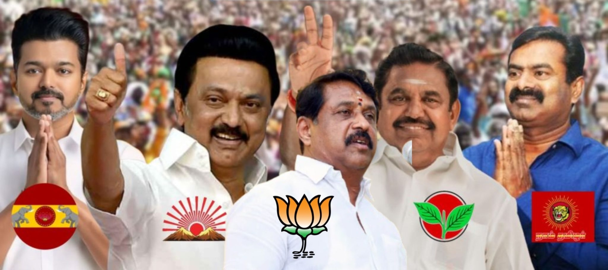

Introduction to Tamil Nadu Election 2026

The Tamil Nadu Assembly Election 2026 was one of the most important political events in the state. People from different districts of Tamil Nadu participated actively in voting to elect their representatives and form the next government. The election created huge excitement among citizens because several political parties competed strongly to gain public support.
Political parties conducted campaigns in cities, towns, and villages. Public meetings, road shows, television debates, and social media promotions became major parts of the election. Many voters discussed topics such as employment opportunities, education, development, healthcare, transport, women welfare, agriculture, and youth empowerment.
The Election Commission arranged polling booths across Tamil Nadu and ensured that the election was conducted peacefully and fairly. Electronic Voting Machines (EVMs) and VVPAT systems were used during voting.